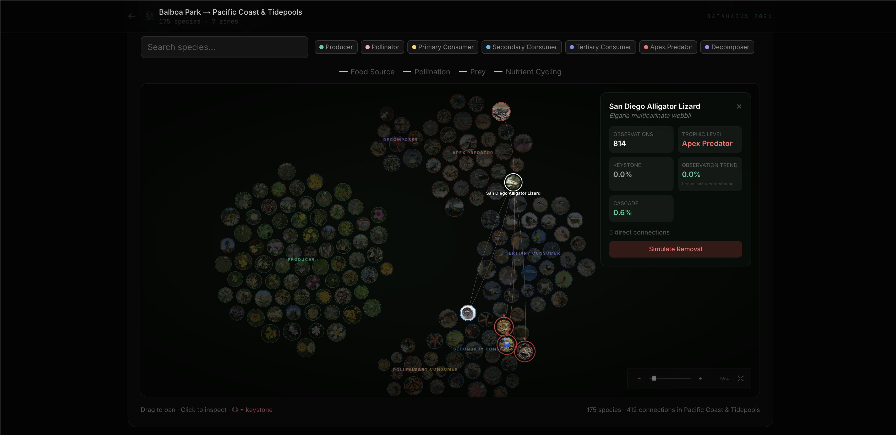

BioScope
Making the ripple effects of species loss visible in San Diego.

Problem and customer
San Diego residents and conservation learners can find lists of local species, but those lists make it hard to see which other species might be affected if one disappears. BioScope lets them explore that question in a neighborhood or park they know.
Early ideas
We first tried connecting species with randomly generated links. The links produced implausible feeding relationships, so we dropped them and built rules for which ecological groups could feed on one another.
Design decisions
- We tried random links and chose directional feeding rules because a removal simulation depends on plausible relationships between predators and prey.
- We started with the question a list of endangered species leaves open and chose an interactive food web with a removal control so people could trace the downstream effects from one species.
Validation
During development, we inspected the generated food web and found that some links made little ecological sense. We revised the graph to apply feeding rules by ecological role. The hackathon submission does not document formal user testing.
Final design
Start by searching for a neighborhood or park. In the food web, select a species to see its role and connections. Use Simulate Removal to explore the effects on the rest of the web.
Outcome and next steps
BioScope won 1st Place UI/UX at DataHacks 2026. Next, I'd watch first-time users run a removal and ask them to explain which species are affected and why. I'd use their answers to improve the graph legend and explain where the model is uncertain.